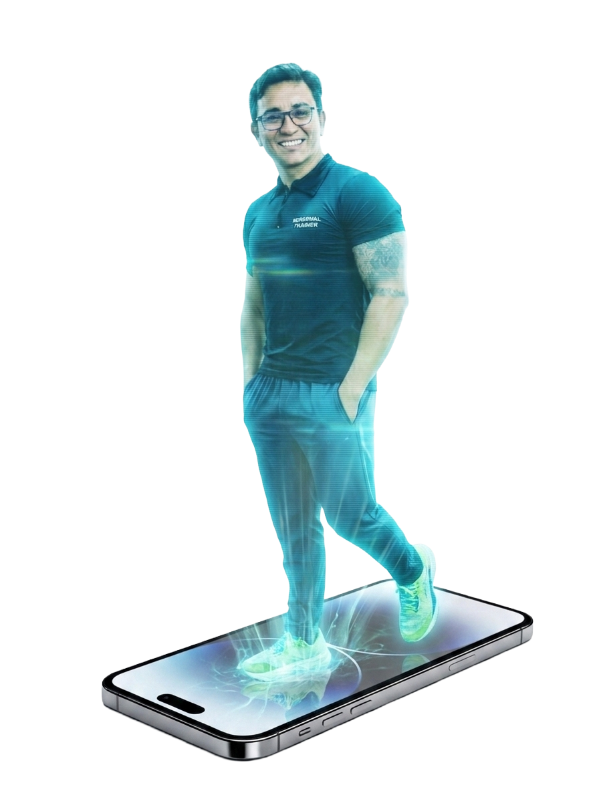

ACOMPANHAMENTO ONLINE EM MUSCULAÇÃO TERAPÊUTICA – MÉTODO RB
Agora você pode contar com meu acompanhamento personalizado de qualquer lugar do Brasil e do mundo.
Através de um aplicativo moderno, intuitivo e muito fácil de usar, você terá acesso ao seu programa de
treinamento totalmente individualizado, desenvolvido de acordo com suas necessidades, limitações e
objetivos.
O Método RB foi criado para ajudar pessoas que convivem com dores musculoesqueléticas, limitações
físicas e dificuldades para realizar suas atividades do dia a dia.
Meu trabalho une ciência,
experiência
prática e acompanhamento próximo para promover mais qualidade de vida, funcionalidade e bem-estar.
Ao realizar sua assinatura mensal de R$ 200,00, você terá acesso a:
Treinamento personalizado e atualizado conforme sua evolução;
Acompanhamento profissional especializado em Musculação Terapêutica;
Suporte para esclarecimento de dúvidas;
Exercícios explicados de forma didática dentro do aplicativo;
Atendimento online para alunos de qualquer cidade ou país;
Estratégias voltadas para redução de dores, fortalecimento muscular e melhora da qualidade de vida.
Não importa onde você esteja.
Com o Método RB, você terá orientação profissional especializada para
cuidar da sua saúde, recuperar sua confiança e conquistar uma vida com menos dor e mais movimento.
Sua transformação começa com um passo. Invista na sua saúde e descubra como a Musculação Terapêutica
pode mudar sua vida.
Home
Adquirir
Whatsapp
